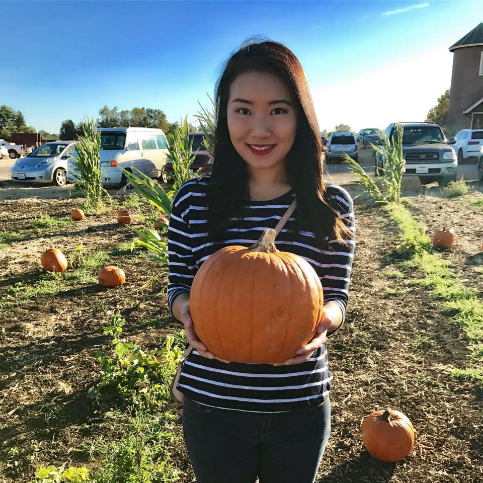
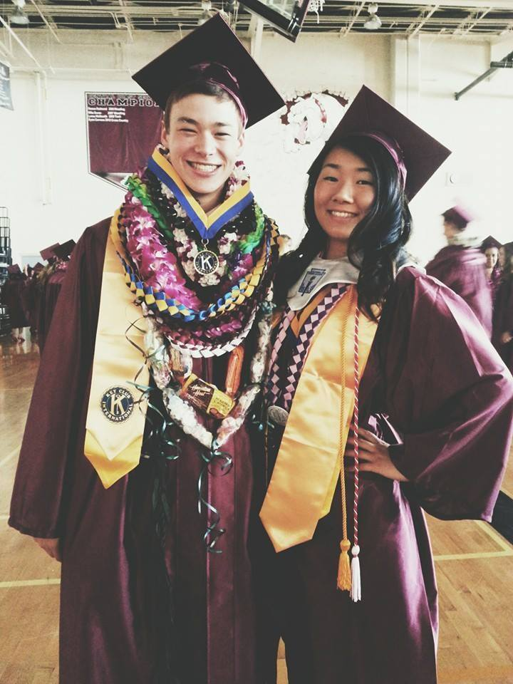
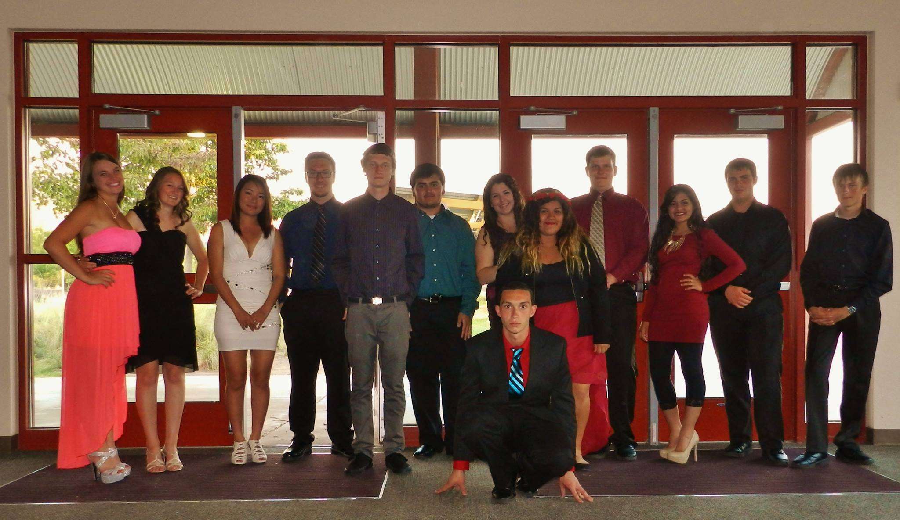

Hyegin Cho

Student Data Analyst
Hello, I am Hyegin and I am a student data analyst.
I am a current senior college student at UC Davis majoring in applied statisitcs.
I first got into statistics because I believe numbers are beautiful.
Numbers are universal and they can be understood in any counntry.
In 2006, I transferred to a school in American military base in Korea.
I could not understand anything on the board for a while because of language transition.
However, numbers were different.
I excelled in math classes because it did not require me to be perfect in English.
I fell in love numbers since then.
Thank you for visiting my page.
안녕하십니까? 제 왭사이트에 와주신걸 감사하게 생각합니다.
전 한국에서 11세 까지 자랐으나, 그 후로는 미국 켈리포니아에서 자랐습니다.
중학교는 켈리포니아 산호세에 있는 마틴머피 중학교를 나왔으며,
고등학교는 켈리포니아 모간힐에 있는 앤 소브라토 고등학교를 나왔습니다.
지금은 유씨데이비스를 다니며 통계학을 전공하고 있습니다.
Hyegin's Facebook page
Hyegin's LinkedIn
<
In high school, I was an overachiever.
I was in California Scholarship Federation, National Honor Society, Key club

And band

Although I have lived in America for most of my teenage years, I still love my Korean culture.